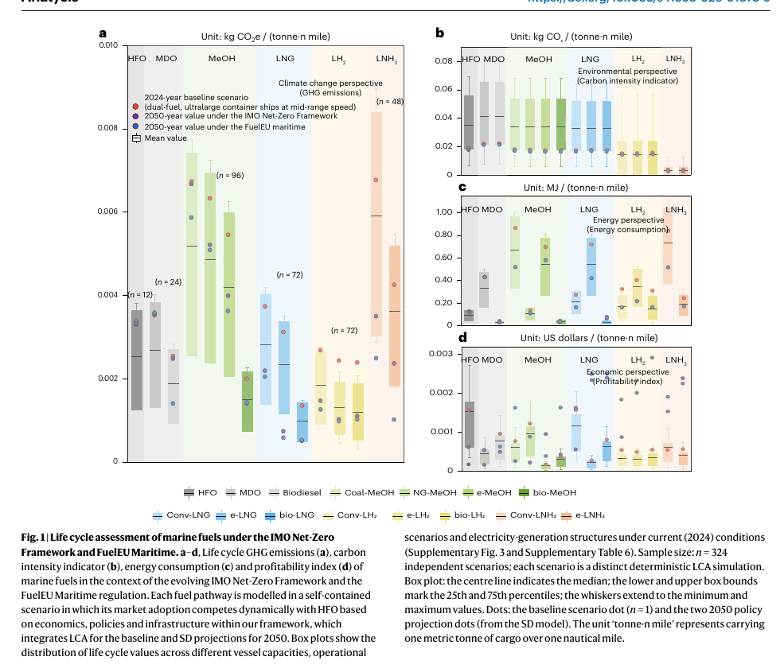
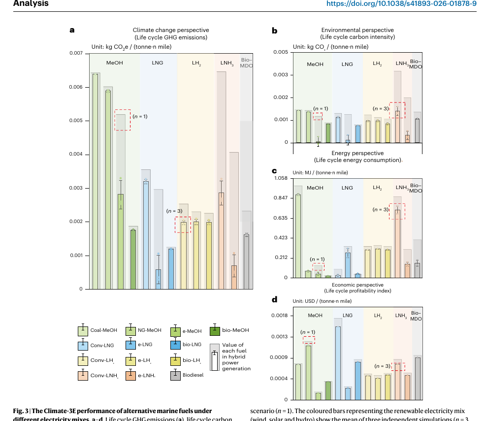
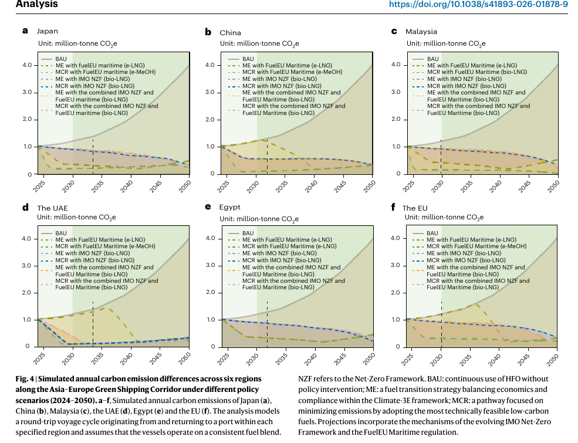
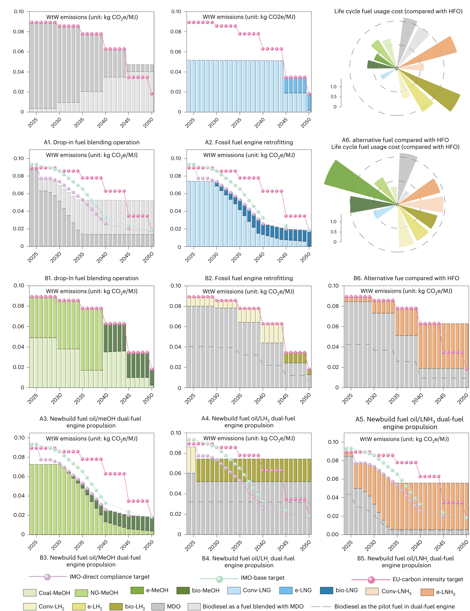

分阶段燃料转型：亚欧绿色航运走廊如何走向脱碳？
Research Brief · Shipping · Energy · Policy
基于 Li et al. (2026), Nature Sustainability 9, 1256–1265. DOI: 10.1038/s41893-026-01878-9
核心发现
- 在作者的模拟中，大豆基生物柴油适合近期过渡，电制燃料在 2040 年后占据重要地位。具体转换时间取决于电力结构、成本和政策设置。
- 电制燃料是否减碳，要看生产所用的电。化石电力占比较高时，它的生命周期排放可能超过传统燃料。
- 生物 LNG 与传统 LNG 的结果不同。生物 LNG 有减排潜力；传统 LNG 虽有成本优势，甲烷泄漏等环节却可能使其生命周期排放高于 HFO 和 MDO。
- IMO 净零框架、FuelEU Maritime 及二者叠加的情景，会改变燃料的合规成本，也会改变经济性最优与减排最多两条路径之间的距离。
换燃料之前，需要算清哪些账？
一艘今天订造的船，可能要经历数轮排放规则收紧。船东需要评估它在未来航线上能加到什么燃料，以及生产这些燃料的电力是否足够清洁。眼下便宜的方案，未必能在整个运营期内保持成本优势。
Li 等人的研究将这些变化放进同一个模型。作者先比较燃料的生命周期表现，再模拟技术降本、供应约束和合规成本如何影响采用路径。分析对象是亚欧绿色航运走廊，时间延伸到 2050 年。
文中的 IMO 路径均为论文的政策模拟设置。作者指出，IMO 净零框架的正式通过曾被推迟；本稿沿用其设定，未另行核验当前政策的生效状态。
研究怎样比较燃料？
作者用 Climate-3E 框架评估气候影响、环境表现、生命周期能耗和经济可行性。生命周期评估（LCA）给出基准值，系统动力学（SD）模型据此模拟 2024—2050 年的燃料策略、排放与成本。
比较以重油（HFO）和船用柴油（MDO）为基准，覆盖 13 种替代燃料，包括生物柴油，以及甲醇、LNG、液氢和液氨的不同生产路线。区域案例包括日本、中国、马来西亚、阿联酋、埃及和欧盟，并分别设置当前电力结构与可再生电力情景。
研究有两组比较维度。政策设置分为 IMO、FuelEU 及二者叠加；燃料策略则分为 BAU（持续使用 HFO 的基准）、ME（兼顾经济性与合规）和 MCR（最大减碳）。主文报告总体评估覆盖 1,300 个情景，图 1 图注对应其中 324 个独立确定性 LCA 情景。这些数量描述的是模拟设置，不能当作船舶实测样本量。
LCA 的功能单位是每吨货物运输一海里，well-to-wake 边界涵盖原料获取、燃料生产、储运和船上燃烧。作者使用 GaBi 9.2.1 与 Vensim PLE 10.4.0，并报告了 Monte Carlo 和敏感性分析。本稿依据主文解读，未独立复算模型或审计补充材料中的全部参数。
图 1｜低排放燃料的能耗与成本

原论文图 1a–d，PDF 第 3 页，期刊第 1258 页。四个面板依次为生命周期温室气体排放、碳强度指标、生命周期能耗和盈利性指标。箱体描述情景分布，彩色点分别对应 2024 年基准和 2050 年政策投影；这里的箱体不是实测样本的置信区间。
氢基燃料在部分生产路线下排放较低，但用于远距离航行时，还受能量密度和柴油掺混要求限制。生物甲醇、生物 LNG 和生物液氢在减排、能耗与成本之间较为均衡，电制燃料的竞争力则更依赖清洁电力和后续降本。
因此，图 1 的几个面板需要一起读。排放较低，不能直接推出燃料更便宜，也不能说明相应船型已经具备运营条件。
图 2｜沿线港口的能源条件有多大差别？

原论文图 2，PDF 第 4 页，期刊第 1259 页。地图标出补给港口、计划建设的基础设施和航道瓶颈，并列出沿线地区的发电装机情况。它反映论文采用的资料，不能作为实时加注港口清单。
东亚圆环中的 1,630 GW 是总装机，可再生装机占 39.8%，对应约 649 GW；西欧的图示比例为 53.8%。东亚的规模较大，西欧的比例较高。两者回答的是不同问题，而且装机比例也不等于实际发电量占比。
这些区域差异会影响电制燃料的生产排放和供应条件。对于跨越多个补给节点的航线，仅确认某个港口建有加注设施，还不足以判断全程供应是否可行。
图 3｜改用可再生电力后，哪些指标改善了？

原论文图 3a–d，PDF 第 5 页，期刊第 1260 页。灰色柱对应欧盟当前混合电力情景，彩色柱是风、光、水电三个独立模拟的均值；误差线表示最小—最大值，并非抽样误差。
在这一案例中，改用可再生电力后，电制甲醇（e-MeOH）、电制 LNG（e-LNG）和电制液氨（e-LNH₃）的生命周期能耗分别下降 57.2%、56.8% 和 41.5%。这些是能耗降幅，不能用作价格下降或温室气体减排的百分比。生物燃料对电力结构的敏感度相对较低。
图 3 还有一个容易误读的地方：面板 a 的温室气体排放与面板 b 的碳强度采用不同口径。电制甲醇在 b 中的数值很低，但在 a 中仍有较高排放。作者将剩余的温室气体负担联系到合成过程中的 N₂O 和 CH₄ 排放。读这类图时，必须保留指标和单位，不能笼统地写成“碳排放接近零”。
图 4｜成本最优与减排最多，何时走向不同路径？

原论文图 4a–f，PDF 第 6 页，期刊第 1261 页。纵轴是模拟年排放量，单位为百万吨 CO₂e。各面板对应以当地港口为起终点的往返航行案例，不代表所在国家或地区的全部航运排放。
中国和欧盟案例中，FuelEU 单独情景下的 ME 与 MCR 路径一度明显分离。在论文的 IMO 及叠加情景中，两条路径更接近。这说明经济性与减排目标是否一致，取决于合规要求随时间如何收紧。
作者认为，FuelEU 的渐进式目标与较高罚金，仍可能允许部分成本较低的传统替代燃料使用较长时间；论文设定的 IMO 年度轨迹则更严格地限制了这种过渡。罚金水平只是其中一个参数，还要看哪些燃料能在各年份满足目标。
图 5｜掺混、改造与新船的转型节奏

原论文图 5，PDF 第 7 页，期刊第 1262 页。A 为 FuelEU 单独情景，B 为两项政策叠加。A1/B1 对应掺混，A2/B2 对应发动机改造，A3–A5/B3–B5 对应新建双燃料方案。柱状图的纵轴为 kg CO₂e/MJ；右侧径向图表示 2050 年相对 HFO 的燃料使用成本倍数。
在作者设定下，掺混生物柴油可以实现近期减排，但难以满足 2035 年后的 IMO 目标。新建双燃料船舶的路径更长，也更依赖燃料生产条件、柴油掺混比例和合规成本。
对照 A、B 两组面板，可以看到同一种船舶技术在不同政策下的燃料组合和转换节奏。评估改造或订船方案时，需要保留这条时间线。只取 2050 年某个终点值，会遗漏过渡期间的成本和排放。
对项目决策的启示
以下是 Abyssal Mind 根据论文作出的解读。
船东评估新船或改造方案时，可以先检查过渡燃料能维持合规到哪一年，再估算后续换燃料所需的设备条件与成本。当前燃料价格有参考价值，但 2035 年后的约束可能改变方案排序。
港口和燃料供应商需要把加注设施与燃料生产地的电力条件一起评估。图 2 的区域差异、图 3 的电力敏感性，说明设施建成后仍要核查燃料的来源和生命周期排放。沿线其他港口能否持续供货，也会影响一条走廊的实际使用。
对政策设计而言，图 4 提出了一个具体问题：成本最低的合规方案，是否会长期偏离减排最多的方案？比较这两条轨迹，有助于判断现有激励能否支持预期的燃料转换。
哪些假设会改变结论？
主文列出的几项假设尤其影响结果的适用范围：
- 船舶沿固定航线往返，全程采用一致的燃料混合比例，未模拟途中灵活采购和换燃料。
- bio-LNG 的供给弹性高于其他生物燃料。这一设定会影响它的扩张优势。
- IMO 2040 年后的目标采用外部来源延伸，零碳燃料奖励机制未纳入模型。
- EU ETS 未被显式建模。作者用 FuelEU 罚金代表更广泛的欧盟政策经济激励，因此模型中的合规成本不能直接用于计算企业账单。
- 模型未纳入经营者行为反应、未来监管变化和宏观冲击。
技术学习曲线、燃料供应和电力结构也可能偏离设定。本文的燃料排序和转换年份应放在这些条件下理解。用于具体船型或航线前，还需按项目数据重新测算。
文献与图片来源
Li, C., Gu, X., Qin, Q., Zhang, W., Xu, G., Yang, J. & Feng, K. (2026). Phased fuel transitions for decarbonizing the Asia–Europe green shipping corridor. Nature Sustainability, 9, 1256–1265. https://doi.org/10.1038/s41893-026-01878-9
论文在线发表于 2026 年 8 月 18 日。作者公开的数据入口：Zenodo 数据集。
图 1—5 使用 Zotero PDF Figure 从论文附件提取的完整图版，保留全部面板与图例，未重绘或修改数据。项目中的 assets/articles/phased-fuel-transitions/provenance.json 保存提取记录与文件校验值。
原图版权 © The Author(s) 2026，许可为 CC BY-NC-ND 4.0，复用须遵守非商业、禁止演绎等条件。中文说明为 Abyssal Mind 独立解读，并非原图注的逐字译文。本稿为本地研究解读草稿。